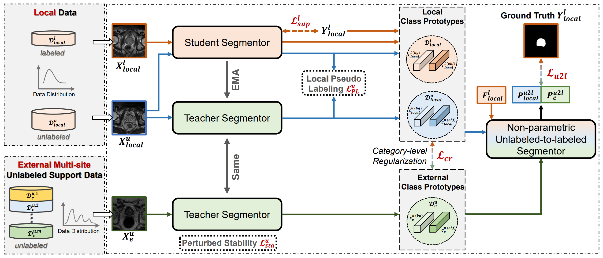

Selected Publications | Full List
| Journal | |||

|
Unlocking the Potential of Weakly Labeled Data: A Co-Evolutionary Learning Framework for Abnormality Detection and Report Generation Jinghan Sun*, Dong Wei*, Zhe Xu, Donghuan Lu, Hong Liu, Hong Wang, Liansheng Wang, Sotirios A. Tsaftaris, Steven McDonagh, Yefeng Zheng. (* equal contribution) IEEE TMI, 2024. [paper] |
Hybrid unsupervised representation learning and pseudo-label supervised self-distillation for rare disease imaging phenotype classification with dispersion-aware imbalance correction Jinghan Sun*, Dong Wei*, Liansheng Wang, Yefeng Zheng. (* equal contribution) Medical Image Analysis (MedIA), 2024.(IF: 10.9, JCR-Q1) [paper, code] |
|
| Conference | |||

|
You've Got Two Teachers: Co-evolutionary Image and Report Distillation for Semi-supervised Anatomical Abnormality Detection in Chest X-ray Jinghan Sun*, Dong Wei*, Zhe Xu, Donghuan Lu, Hong Liu, Liansheng Wang, Yefeng Zheng. (* equal contribution) Medical Image Computing and Computer Assisted Interventions (MICCAI), 2023.(early accept) [paper, code] |
||
|  |
Category-Level Regularized Unlabeled-to-Labeled Learning for Semi-supervised Prostate Segmentation with Multi-site Unlabeled Data Zhe Xu, Donghuan Lu, Jiangpeng Yan, Jinghan Sun, Jie Luo, Dong Wei, Sarah Frisken, Quanzheng Li, Yefeng Zheng, Raymond Tong Medical Image Computing and Computer Assisted Interventions (MICCAI), 2023.(Oral, early accept) [paper] |
||
|
M3AE: Multimodal Representation Learning for Brain Tumor Segmentation with Missing Modalities Hong Liu, Dong Wei, Donghuan Lu, Jinghan Sun, Liansheng Wang, Yefeng Zheng Proceedings of the AAAI Conference on Artificial Intelligence (AAAI), 2023.[code, code] |
|||
|
Boost Supervised Pretraining for Visual Transfer Learning: Implications of Self-Supervised Contrastive Representation Learning Jinghan Sun*, Dong Wei*, Kai Ma, Liansheng Wang, Yefeng Zheng. (* equal contribution) Proceedings of the AAAI Conference on Artificial Intelligence (AAAI), 2022.[paper, code] |
|||
|
Lesion guided explainable few weak-shot medical report generation Jinghan Sun*, Dong Wei*, Liansheng Wang, Yefeng Zheng. (* equal contribution) Medical Image Computing and Computer Assisted Intervention (MICCAI), 2022.[paper, code] |
|||
|
Unsupervised Representation Learning Meets Pseudo-Label Supervised Self-Distillation: A New Approach to Rare Disease Classification Jinghan Sun*, Dong Wei*, Kai Ma, Liansheng Wang, Yefeng Zheng. (* equal contribution) Medical Image Computing and Computer Assisted Intervention (MICCAI), 2021.[paper, code] |
|||